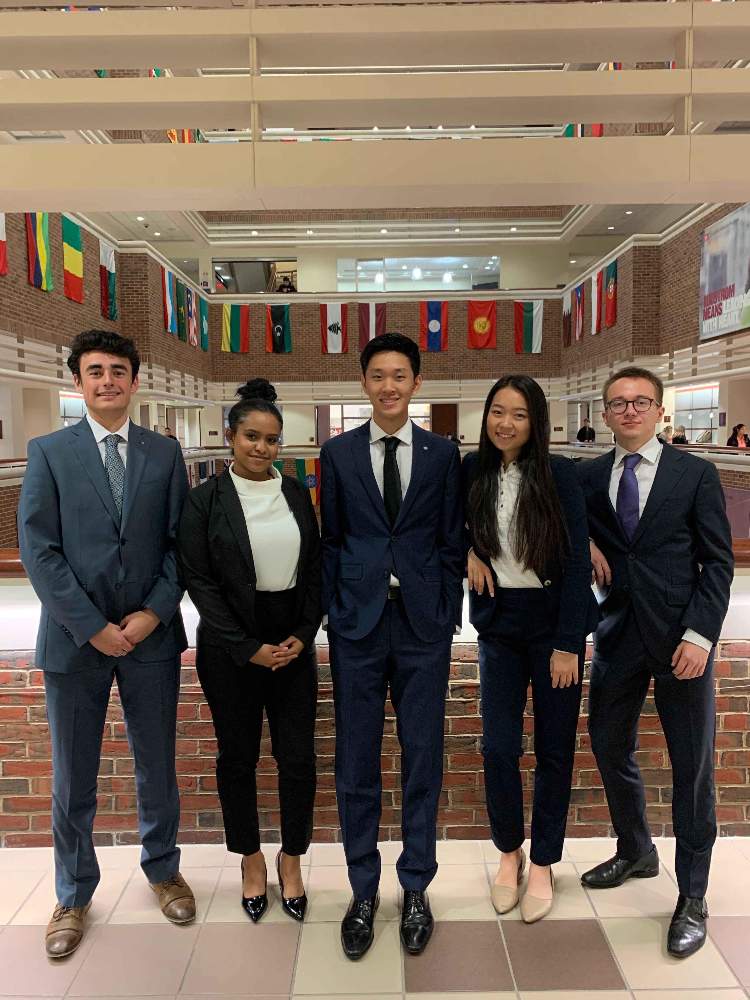
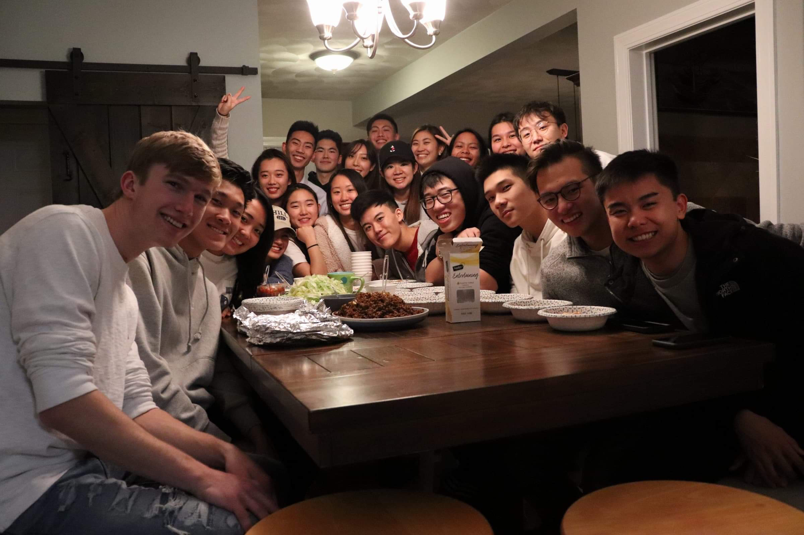
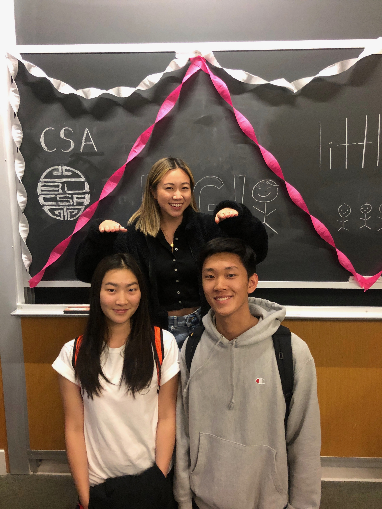

Life at Boston University
Classes, CSA, PCt Pledge process
Classes:
One of my biggest classes is SM 131. It is the business and ethics class that is required for all Questrom students. On the left, it is a picture of my SM team right after we presented our first presentation. I was lucky to have such a great group that works hard and strives for great goals.
Up next, is our second presentation that is due the Monday that students return from Thanksgiving break. My team and I are putting the finishing touches on our second presentation and must start practicing to succeed in our second presentation.
PCT Pledge Process:
From the pledge process so far, I can definitely say that I've learned so much professionally. The classes we have and assignments taught me a lot. One of the great parts of the pledge process so far would be retreat. The retreat brought our class to be closer and we had a great time.
CSA:
One of the first clubs I decided to join at BU was CSA since it was a good way for me to meet more people and embrace my culture. Unfortunately, I have not been to many CSA events due to other committments. But, I do look forward to other events in the future.
On the picture on the left, it was day of the big/little reveal. I got a great big, Sydney, and a great twin, Stephanie.